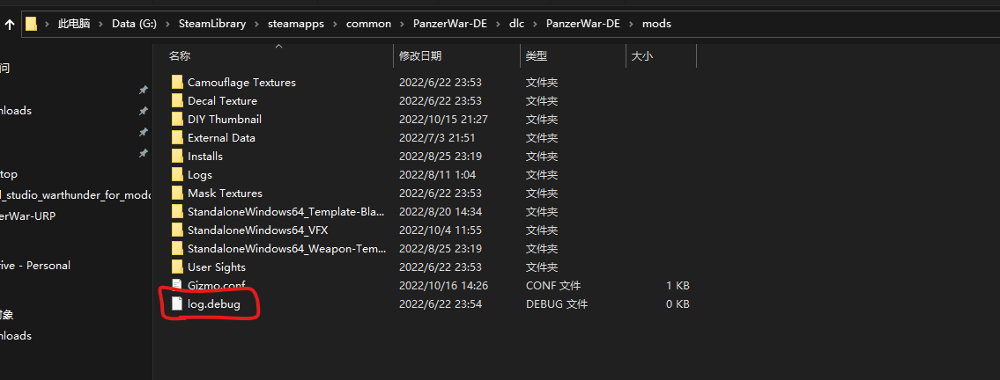

3. 游戏运行日志显示
游戏日志是用于分析游戏卡死原因的主要手段之一。
开启游戏日志
出于性能的考虑，在最近的版本默认保持了关闭。若需要开启，则需要手动在模组文件夹创建空文件 log.debug 或下载以下文件解压到模组文件夹下

模组文件夹各平台路径
安卓决定版：/sdcard/Android/data/com.ShanghaiWindy.PanzerWarDEM/files/mods/
安卓普通版：/sdcard/Android/data/com.ShanghaiWindy.PanzerWarOpenSource/files/mods/
电脑普通版：SteamLibrary\steamapps\common\PanzerWar-DE\dlc\PanzerWar\mods
电脑决定版：SteamLibrary\steamapps\common\PanzerWar-DE\dlc\PanzerWar-DE\mods
电脑HDRP版：SteamLibrary\steamapps\common\PanzerWar-DE\dlc\PanzerWar-DE-HDRP\mods
对于安卓设备，装有 adb 环境，则也可以使用 如下 adb 命令
adb shell touch /sdcard/Android/data/com.ShanghaiWindy.PanzerWarDEM/files/mods/log.debug
调试日志显示
然后，你就可以看到游戏内调试窗口显示的运行日志。使用方法: 点击右上角自定义，拉到最下面，开启调试日志。 点击新出现的框，查看报错。
电脑版日志文件
电脑普通版： C:\Users\你的用户名\AppData\LocalLow\ShanghaiWindy\PanzerWar\Player.log
电脑决定版： C:\Users\你的用户名\AppData\LocalLow\ShanghaiWindy\PanzerWar-DE\Player.log